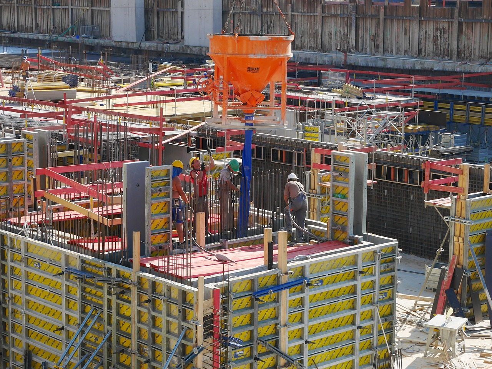

創業・土木工事業開始
1960年（昭和35年）1月1日 創業・土木工事業開始

会社概要
長田建設株式会社は1960年に創業し、1985年に法人化しました。 公共工事をメインにあらゆる工事を手掛け、今日に至ります。 「自然災害に強い地域づくり」をスローガンに道路工事、河川工事、治山工事など 人々が安心して暮らせる街づくりを通じて社会に貢献して参りました。 創業から今まで培ってきた信頼と技術力を後世に残せるようにこれからも地域社会に貢献していきたいと思っています。
1960年（昭和35年）1月1日 創業・土木工事業開始
1963年（昭和38年）9月3日 (株)向井公務所を継承（代表取締役 長田俊雄）
1972年（昭和47年）4月1日 会社名を長田建設に改称
1978年（昭和53年）11月1日 事業継承（事業主 長田太賀夫）
1985年（昭和60年）2月7日 組織変更 長田建設（株） 設立（資本金500万円）
土日休み、残業時間削減など働きやすい環境づくりを推進。
地域に根ざした信頼と技術力で、安心して暮らせる街づくりに貢献中。
自然災害に強い地域づくりを通じて、人々が安心して暮らせる街づくりに貢献します。
創業から培ってきた信頼と技術力を後世に残し、地域社会の発展に寄与します。
確かな技術力と豊富な経験を活かし、土木工事業界において地域に根ざした
信頼される企業を目指します。
安全で品質の高い工事で社会インフラの発展に貢献します。
安全第一を基本とし、品質の高い工事を提供します。 地域の皆様との信頼関係を大切にし従業員の働きやすい環境づくりに努めます。